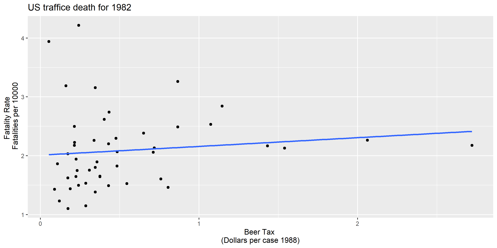
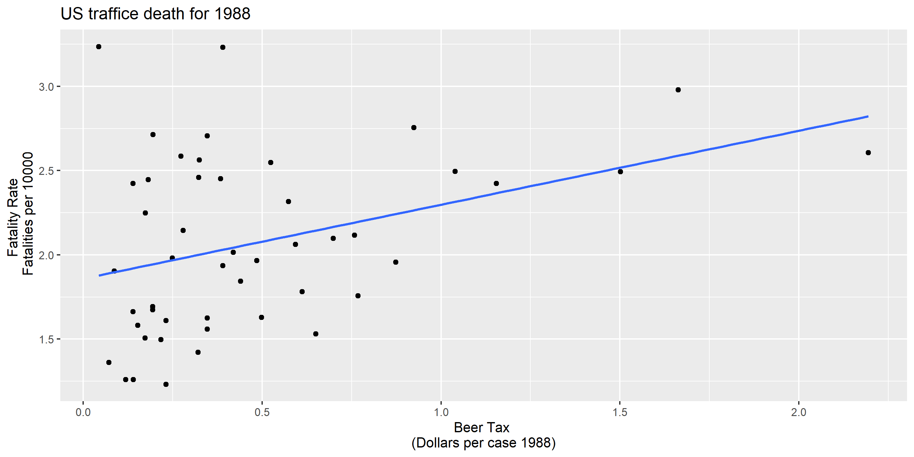
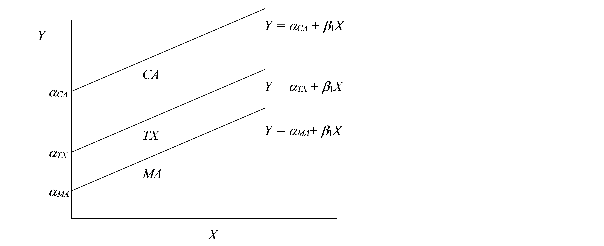

## Rows: 336
## Columns: 34
## $ state <fct> al, al, al, al, al, al, al, az, az, az, az, az, az, …
## $ year <fct> 1982, 1983, 1984, 1985, 1986, 1987, 1988, 1982, 1983…
## $ spirits <dbl> 1.37, 1.36, 1.32, 1.28, 1.23, 1.18, 1.17, 1.97, 1.90…
## $ unemp <dbl> 14.4, 13.7, 11.1, 8.9, 9.8, 7.8, 7.2, 9.9, 9.1, 5.0,…
## $ income <dbl> 10544, 10733, 11109, 11333, 11662, 11944, 12369, 123…
## $ emppop <dbl> 50.7, 52.1, 54.2, 55.3, 56.5, 57.5, 56.8, 56.9, 57.6…
## $ beertax <dbl> 1.5394, 1.7890, 1.7143, 1.6525, 1.6099, 1.5600, 1.50…
## $ baptist <dbl> 30.36, 30.33, 30.31, 30.29, 30.27, 30.25, 30.22, 3.9…
## $ mormon <dbl> 0.328, 0.343, 0.359, 0.376, 0.393, 0.411, 0.430, 4.9…
## $ drinkage <dbl> 19.0, 19.0, 19.0, 19.7, 21.0, 21.0, 21.0, 19.0, 19.0…
## $ dry <dbl> 25.0, 23.0, 24.0, 23.6, 23.5, 23.8, 23.8, 0.0, 0.0, …
## $ youngdrivers <dbl> 0.212, 0.211, 0.211, 0.211, 0.213, 0.216, 0.218, 0.2…
## $ miles <dbl> 7234, 7836, 8263, 8727, 8953, 9166, 9674, 6810, 6587…
## $ breath <fct> no, no, no, no, no, no, no, no, no, no, no, no, no, …
## $ jail <fct> no, no, no, no, no, no, no, yes, yes, yes, yes, yes,…
## $ service <fct> no, no, no, no, no, no, no, yes, yes, yes, yes, yes,…
## $ fatal <int> 839, 930, 932, 882, 1081, 1110, 1023, 724, 675, 869,…
## $ nfatal <int> 146, 154, 165, 146, 172, 181, 139, 131, 112, 149, 15…
## $ sfatal <int> 99, 98, 94, 98, 119, 114, 89, 76, 60, 81, 75, 85, 87…
## $ fatal1517 <int> 53, 71, 49, 66, 82, 94, 66, 40, 40, 51, 48, 72, 50, …
## $ nfatal1517 <int> 9, 8, 7, 9, 10, 11, 8, 7, 7, 8, 11, 19, 16, 14, 5, 2…
## $ fatal1820 <int> 99, 108, 103, 100, 120, 127, 105, 81, 83, 118, 100, …
## $ nfatal1820 <int> 34, 26, 25, 23, 23, 31, 24, 16, 19, 34, 26, 30, 25, …
## $ fatal2124 <int> 120, 124, 118, 114, 119, 138, 123, 96, 80, 123, 121,…
## $ nfatal2124 <int> 32, 35, 34, 45, 29, 30, 25, 36, 17, 33, 30, 25, 34, …
## $ afatal <dbl> 309, 342, 305, 277, 361, 368, 298, 174, 197, 212, 22…
## $ pop <dbl> 3942002, 3960008, 3988992, 4021008, 4049994, 4082999…
## $ pop1517 <dbl> 209000, 202000, 197000, 195000, 204000, 205000, 2010…
## $ pop1820 <dbl> 221553, 219125, 216724, 214349, 212000, 208998, 1930…
## $ pop2124 <dbl> 290000, 290000, 288000, 284000, 263000, 259000, 2630…
## $ milestot <dbl> 28516, 31032, 32961, 35091, 36259, 37426, 39684, 197…
## $ unempus <dbl> 9.7, 9.6, 7.5, 7.2, 7.0, 6.2, 5.5, 9.7, 9.6, 7.5, 7.…
## $ emppopus <dbl> 57.8, 57.9, 59.5, 60.1, 60.7, 61.5, 62.3, 57.8, 57.9…
## $ gsp <dbl> -0.02212, 0.04656, 0.06280, 0.02749, 0.03214, 0.0489…Panel Regression: Traffic Deaths & Wages
Zahid Asghar
School of Economics, QAU, Islamabad
School of Economics, QAU, Islamabad
2/2/23
Panel Data Regression
A panel dataset contains observations on multiple entities (individuals), where each entity is observed at two or more points in time.
Hypothetical examples:
Data on 50 districts in 2010 floods and again in 2022, for 100 observations total.
Data on 100 SMES, each SME is observed in 3 years, for a total of 150 observations.
Data on 1000 individuals, in four different months, for 4000 observations total.
Notations for Panel Data
A double subscript distinguishes entities (states) and time periods (years)
\(i\) = entity (state), \(n\) = number of entities, so \(i = 1,\dots,n\)
\(t\) = time period (year), \(T\) = number of time periods so \(t =1,\dots,T\)
Data: Suppose we have 1 regressor. The data are: \(\left(X_{it},Y_{it}\right)\qquad\begin{cases} i=1,...,n\\ t=1,...,T\end{cases}\)
Panel data with \(K\) regressors \((X_{1it},X_{2it},\dots,X_{kit} Y_{i}t), i = 1,\dots,n,\ t = 1,…,T\) \(n\) = number of entities (states) \(T\) = number of time periods (years) Also called longitudinal data
Why are panel data useful?
With panel data we can control for factors that: - Vary across entities (states) but do not vary over time - Could cause omitted variable bias if they are omitted - are unobserved or unmeasured – and therefore cannot be included in the regression using multiple regression
Here’s the key idea: > If an omitted variable does not change over time, then any changes in Y over time cannot be caused by the omitted variable.
Example of a panel data set
Observational unit: a year in a U.S. state - 48 U.S. states, so \(n\) = # of entities = 48 - 7 years (1982,…, 1988), so \(T\) = # of time periods = 7 - Balanced panel, so total # observations = \(7\times48\) = 336 Variables: - Traffic fatality rate (# traffic deaths in that state in that year, per 10,000 state residents) - Tax on a case of beer - Other (legal driving age, drunk driving laws, etc.)
An overview of data
A large number of variables and 336 total observations. We need to select only a few variables required in doing this exercise.
## Summarise the variable state and year
fatalities %>% select(state,year) %>%
group_by(year) %>%
summarise(count=n())
## # A tibble: 7 × 2
## year count
## <fct> <int>
## 1 1982 48
## 2 1983 48
## 3 1984 48
## 4 1985 48
## 5 1986 48
## 6 1987 48
## 7 1988 48
## Traffic Deaths and Alcohal Taxes
# define the fatality rate
df <-fatalities %>% mutate(fatal_rate=fatal/pop*10000)
# subset the data
Fatalities1982 <- df %>% filter(year=="1982")
Fatalities1988 <- df %>% filter(year=="1988")U.S traffic death data for 1982
U.S traffic death data for 1988
Regression line
\(\widehat{FatalityRate}= 2.01 + 0.15beertax\)
\(\widehat{FatalityRate}= 1.86 + 0.43beertax\)
High alcohal tax, more deaths :smiley:
Why might there be higher more traffic deaths in states that have higher alcohol taxes?
Other factors that determine traffic fatality rate: - Quality (age) of automobiles - Quality of roads - “Culture” around drinking and driving - Density of cars on the road
These omitted variables could cause omitted variable bias
Example #1: traffic density. Suppose:
High traffic density means more traffic deaths
(Western) states with lower traffic density have lower alcohol taxes
Then the two conditions for omitted variable bias are satisfied.
- Specifically, “high taxes” could reflect “high traffic density” (so the OLS coefficient would be biased positively – high taxes, more deaths)
- Panel data lets us eliminate omitted variable bias when the omitted variables are constant over time within a given state.
Cultural attitude towards driving and drinking
- arguably are a determinant of traffic deaths; and
- potentially are correlated with the beer tax, so beer taxes could be picking up cultural differences (omitted variable bias).
- Then the two conditions for omitted variable bias are satisfied. Specifically, “high taxes” could reflect “cultural attitudes towards drinking” (so the OLS coefficient would be biased)
- Panel data lets us eliminate omitted variable bias when the omitted variables are constant over time within a given state.
Panel Data with Two Time Periods
Consider the panel data model: \(\widehat{FatalityRate_{it}} = \beta_0 + \beta_1 BeerTax_{it} + \beta_2Zi + u_{it}\)
\(Z_i\) is a factor that does not change over time (density), at least during the years on which we have data. • Suppose \(Z_i\) is not observed, so its omission could result in omitted variable bias. • The effect of \(Z_i\) can be eliminated using \(T = 2\) years.
The key idea:
Any change in the fatality rate from 1982 to 1988 cannot be caused by \(Z_i\), because \(Z_i\) (by assumption) does not change between 1982 and 1988.
The math: consider fatality rates in 1988 and 1982: \(FatalityRate_{i1988} = \beta_0 + \beta_1 BeerTax_{it} + \beta_2Zi + u_{i1988}\) \(FatalityRate_{i1982} = \beta_0 + \beta_1 BeerTax_{it} + \beta_2Zi + u_{i1982}\)
Suppose \(E{(u_{it}}{/BeerTax_{it},Z_i})=0\) E(uit|BeerTaxit, Zi) = 0.
Subtracting 1988 – 1982 (that is, calculating the change), eliminates the effect of \(Z_i\dots\)
\(FatalityRate_{i1988} = \beta_0 + \beta_1 BeerTax_{it} + \beta_2Zi + u_{i1988}\) \(FatalityRate_{i1982} = \beta_0 + \beta_1 BeerTax_{it} + \beta_2Zi + u_{i1982}\)
so \(FatalityRate_{i1988} – FatalityRate_{i1982}=\\\beta_1(BeerTaxi1988 – BeerTaxi1982) + (u_{i1988} – u_{i1982})\)
• The new error term, \((u_{i1988} – u_{i1982})\), is uncorrelated with either \(FatalityRate_{i1988}\) or \(FatalityRate_{i1982}\) • This “difference” equation can be estimated by OLS, even though \(Z_i\) isn’t observed. • The omitted variable \(Z_i\) doesn’t change, so it cannot be a determinant of the change in \(Y\)
1982 data
\(\widehat{FatalityRate}= 2.01 + 0.15beertax \ n=48\)
1988 data
\(\widehat{FatalityRate}= 1.86 + 0.43beertax \ n=48\)
Difference regression
\(\widehat{FatalityRate_{i1988} - FatalityRate_{i1982}} =\\ -\underset{(0.065)}{0.072} -\underset{(0.36)}{1.04} \times (BeerTax_{i1988}-BeerTax_{i1982}).\)
##Panel Data for two years
# compute the differences
diff_fatal_rate <- Fatalities1988$fatal_rate - Fatalities1982$fatal_rate
diff_beertax <- Fatalities1988$beertax - Fatalities1982$beertax
# estimate a regression using differenced data
fatal_diff_mod <- lm(diff_fatal_rate ~ diff_beertax)
coeftest(fatal_diff_mod, vcov = vcovHC, type = "HC1")
##
## t test of coefficients:
##
## Estimate Std. Error t value Pr(>|t|)
## (Intercept) -0.0720 0.0654 -1.10 0.2761
## diff_beertax -1.0410 0.3550 -2.93 0.0052 **
## ---
## Signif. codes: 0 '***' 0.001 '**' 0.01 '*' 0.05 '.' 0.1 ' ' 1Fixed Effects Regression
What if you have more than 2 time periods \((T > 2)?\)
\(Y_{it} = \beta_0 + \beta_1 X_{it} + \beta_2Z_{i} + u_{it}, i =1,\dots,n, T = 1,\dots,T\)
We can rewrite this in two useful ways: 1. “\(n-1\) binary regressor” regression model 2. “Fixed Effects” regression model
We first rewrite this in “fixed effects” form. Suppose we have \(n = 3\) states: California, Texas, Massachusetts.
\(Y_{it} = \beta_0 + \beta_1 X_{it} + \beta_2Z_{i} + u_{it}, i =1,\dots,n, T = 1,\dots,T\)
Population regression for California (that is, \(i = CA\)): \(Y_{CA,t} = \beta_0 + \beta_1X_{CA,t} + \beta_2Z_{CA} + u_{CA,t}\\ = (\beta_0 + \beta_2Z_{CA}) + \beta_1X_{CA,t} + u_{CA,t}\) or \(Y_{CA,t} = \alpha + \beta_1X_{CA,t} + u_{CA,t}\)
• \(\alpha_{CA} = \beta_0 + \beta_1Z_{CA}\) doesn’t change over time • \(\alpha_{CA}\) is the intercept for CA, and \(\beta_1\) is the slope • The intercept is unique to CA, but the slope is the same in all the states: parallel lines.
\(Y_{it} = \beta_0 + \beta_1 X_{it} + \beta_2Z_{i} + u_{it}, i =1,\dots,n, T = 1,\dots,T\)
Population regression for Texax (that is, \(i = TX\)): \(Y_{TX,t} = \beta_0 + \beta_1X_{TX,t} + \beta_2Z_{TX} + u_{TX,t}\\ = (\beta_0 + \beta_2Z_{TX}) + \beta_1X_{TX,t} + u_{TX,t}\) or \(Y_{TX,t} = \alpha + \beta_1X_{TX,t} + u_{TX,t}\)
Collecting the like terms
\(Y_{CA,t} = \alpha + \beta_1X_{CA,t} + u_{CA,t}\)
\(Y_{TX,t} = \alpha + \beta_1X_{TX,t} + u_{TX,t}\)
\(Y_{MA,t} = \alpha + \beta_1X_{MA,t} + u_{MA,t}\)
or \(Y_{it} = \alpha_{i} + \beta_1 X_{it} + u_{it}, i =CA,TX,MA, T = 1,\dots,T\)
Regression equation for three states
 In binary regressor form: \(Y_{it} = \beta_0 + \gamma CADCAi + \gamma TXDTXi + \beta_1X_{it} + u_{it}\) • \(DCA_{i} = 1\) if state is \(CA, = 0\) otherwise • \(DTX_{t} = 1\) if state is \(TX, = 0\) otherwise • leave out \(DMA_{i}\) (why?)
The Fixed Effects Regression Model
The fixed effect model is \(\begin{align} Y_{it} = \beta_1 X_{1,it} + \cdots + \beta_k X_{k,it} + \alpha_i + u_{it} \tag{10.3} \end{align}\) with \(i=1,\dots,n\) and \(t=1,\dots,T\) . The \(\alpha_i\) are entity-specific intercepts that capture heterogeneities across entities. An equivalent representation of this model is given by \(\begin{align} Y_{it} = \beta_0 + \beta_1 X_{1,it} + \cdots + \beta_k X_{k,it} + \gamma_2 D2_i + \gamma_3 D3_i + \cdots + \gamma_n Dn_i + u_{it} \tag{10.4} \end{align}\)
where the \(D2_i,D3_i,\dots,Dn_i\) are dummy variables.
Summary: Two ways to write the fixed effects model “n-1 binary regressor” form
\(Y_{it} = \beta_0 + \beta_1 X_{1,it} + \gamma_2 D2_i + \gamma_3 D3_i + \cdots + \gamma_n Dn_i + u_{it}\)
where \(D2i =1\) if \(i=2\) \(=0\) otherwise , etc.
“Fixed effects” form: \(Y_{it} = \beta_1X_{it} + \alpha_i + u_{it}\)
• \(\alpha_i\) is called a “state fixed effect” or “state effect” – it is the constant (fixed) effect of being in state \(i\).
Fixed Effects Regression: Estimation
Three estimation methods: 1. “n-1 binary regressors” OLS regression 2. “Entity-demeaned” OLS regression 3. “Changes” specification, without an intercept (only works for T = 2)
• These three methods produce identical estimates of the regression coefficients, and identical standard errors. • We already did the “changes” specification (1988 minus 1982) – but this only works for T = 2 years • Methods #1 and #2 work for general T • Method #1 is only practical when n isn’t too big
1. “n-1 binary regressors” OLS regression
\(Y_{it} = \beta_0 + \beta_1 X_{1,it} + \gamma_2 D2_i + \gamma_3 D3_i + \cdots + \gamma_n Dn_i + u_{it}\)
where \(D2i =1\) if \(i=2\) \(=0\) otherwise , - First create the binary variables D2i,…,Dni - Then estimate (1) by OLS - Inference (hypothesis tests, confidence intervals) is as usual (using heteroskedasticity-robust standard errors) - This is impractical when n is very large (for example if n = 1000 workers)
2. “Entity-demeaned” OLS regression
\[\begin{align*} \frac{1}{n} \sum_{i=1}^n Y_{it} =& \, \beta_1 \frac{1}{n} \sum_{i=1}^n X_{it} + \frac{1}{n} \sum_{i=1}^n a_i + \frac{1}{n} \sum_{i=1}^n u_{it} \\ \overline{Y} =& \, \beta_1 \overline{X}_i + \alpha_i + \overline{u}_i. \end{align*}\] Subtracting from 10.1 yields \[\begin{align} \begin{split} Y_{it} - \overline{Y}_i =& \, \beta_1(X_{it}-\overline{X}_i) + (u_{it} - \overline{u}_i) \\ \overset{\sim}{Y}_{it} =& \, \beta_1 \overset{\sim}{X}_{it} + \overset{\sim}{u}_{it}. \end{split} \tag{10.5} \end{align}\]
In this model, the OLS estimate of the parameter of interest \(\beta_1\) is equal to the estimate obtained using (10.2) — without the need to estimate \(n-1\) dummies and an intercept.
Application to traffic deaths
Panel Data for two years
# compute the differences
diff_fatal_rate <- Fatalities1988$fatal_rate - Fatalities1982$fatal_rate
diff_beertax <- Fatalities1988$beertax - Fatalities1982$beertax
# estimate a regression using differenced data
fatal_diff_mod <- lm(diff_fatal_rate ~ diff_beertax)
coeftest(fatal_diff_mod, vcov = vcovHC, type = "HC1")
##
## t test of coefficients:
##
## Estimate Std. Error t value Pr(>|t|)
## (Intercept) -0.0720 0.0654 -1.10 0.2761
## diff_beertax -1.0410 0.3550 -2.93 0.0052 **
## ---
## Signif. codes: 0 '***' 0.001 '**' 0.01 '*' 0.05 '.' 0.1 ' ' 1df2<-cbind(diff_fatal_rate,diff_beertax)
df2<-as.data.frame(df2)
## Plot
p2<-ggplot(df2)+aes(x=diff_fatal_rate,y=diff_beertax)+geom_point()+
geom_smooth(method = "lm",se=FALSE)
p2+labs(x = "Change in beer tax (in 1988 dollars)",
y = "Change in fatality rate (fatalities per 10000)")+ggtitle("Changes in Traffic Fatality Rates and Beer Taxes in 1982-1988")compute mean fatality rate over all states for all time periods
df %>% group_by(year) %>%
summarise(mean=mean(fatal_rate))
## # A tibble: 7 × 2
## year mean
## <fct> <dbl>
## 1 1982 2.09
## 2 1983 2.01
## 3 1984 2.02
## 4 1985 1.97
## 5 1986 2.07
## 6 1987 2.06
## 7 1988 2.07
mean(df$fatal_rate)
## [1] 2.04
df %>% select(fatal_rate) %>%
summarise(mean=mean(fatal_rate))
## mean
## 1 2.04\(\begin{align} FatalityRate_{it} = \beta_1 BeerTax_{it} + StateFixedEffects\\ + u_{it}, \tag{10.6} \end{align}\)
fatal_fe_lm_mod <- lm(fatal_rate ~ beertax + state - 1, data = df)
fatal_fe_lm_mod
##
## Call:
## lm(formula = fatal_rate ~ beertax + state - 1, data = df)
##
## Coefficients:
## beertax stateal stateaz statear stateca stateco statect statede
## -0.656 3.478 2.910 2.823 1.968 1.993 1.615 2.170
## statefl statega stateid stateil statein stateia stateks stateky
## 3.209 4.002 2.809 1.516 2.016 1.934 2.254 2.260
## statela stateme statemd statema statemi statemn statems statemo
## 2.631 2.370 1.771 1.368 1.993 1.580 3.449 2.181
## statemt statene statenv statenh statenj statenm stateny statenc
## 3.117 1.955 2.877 2.223 1.372 3.904 1.291 3.187
## statend stateoh stateok stateor statepa stateri statesc statesd
## 1.854 1.803 2.933 2.310 1.710 1.213 4.035 2.474
## statetn statetx stateut statevt stateva statewa statewv statewi
## 2.602 2.560 2.314 2.512 2.187 1.818 2.581 1.718
## statewy
## 3.249Demeaned Regressioin
\(\overset{\sim}{FatalityRate} = \beta_1 \overset{\sim}{BeerTax}_{it} + u_{it}.\)
# obtain demeaned data
Fatalities_demeaned <- with(df,
data.frame(fatal_rate = fatal_rate - ave(fatal_rate, state),
beertax = beertax - ave(beertax, state)))
# estimate the regression
summary(lm(fatal_rate ~ beertax - 1, data = Fatalities_demeaned))
##
## Call:
## lm(formula = fatal_rate ~ beertax - 1, data = Fatalities_demeaned)
##
## Residuals:
## Min 1Q Median 3Q Max
## -0.5870 -0.0828 -0.0013 0.0795 0.8978
##
## Coefficients:
## Estimate Std. Error t value Pr(>|t|)
## beertax -0.656 0.174 -3.77 0.00019 ***
## ---
## Signif. codes: 0 '***' 0.001 '**' 0.01 '*' 0.05 '.' 0.1 ' ' 1
##
## Residual standard error: 0.176 on 335 degrees of freedom
## Multiple R-squared: 0.0407, Adjusted R-squared: 0.0379
## F-statistic: 14.2 on 1 and 335 DF, p-value: 0.000191Use plm
Alternatively use plm package
library(plm)
# estimate the fixed effects regression with plm()
fatal_fe_mod <- plm(fatal_rate ~ beertax,
data = df,
index = c("state", "year"),
model = "within")
# print summary using robust standard errors
coeftest(fatal_fe_mod, vcov. = vcovHC, type = "HC1")
##
## t test of coefficients:
##
## Estimate Std. Error t value Pr(>|t|)
## beertax -0.656 0.289 -2.27 0.024 *
## ---
## Signif. codes: 0 '***' 0.001 '**' 0.01 '*' 0.05 '.' 0.1 ' ' 1\(\begin{align} \widehat{FatalityRate} = -\underset{(0.29)}{0.66} \times BeerTax + \\ StateFixedEffects. \tag{10.7} \end{align}\)
The coefficient on $BeerTax $ is negative and significant. The interpretation is that the estimated reduction in traffic fatalities due to an increase in the real beer tax by \(1\$\) is \(0.66\) per \(10,000\) people, which is still pretty high.
Regression with Time Fixed Effect
\(Y_{it} = \beta_0 + \beta_1 X_{it} + \delta_2 B2_t + \cdots\\ + \delta_T BT_t + u_{it},\) where \(T-1\) are binary variables (\(B_1\) is ommited) The entity time fixed effect is \(Y_{it} = \beta_0 + \beta_1 X_{it} + \gamma_2 D2_i + \cdots \\ + \gamma_n DT_i + \delta_2 B2_t + \cdots + \delta_T BT_t + u_{it} .\)
\(FatalityRate_{it} = \beta_1 BeerTax_{it} + StateEffects + \\TimeFixedEffects + u_{it}\)
# estimate a combined time and entity fixed effects regression model
# via lm()
fatal_tefe_lm_mod <- lm(fatal_rate ~ beertax + state + year - 1, data = df)
fatal_tefe_lm_mod
##
## Call:
## lm(formula = fatal_rate ~ beertax + state + year - 1, data = df)
##
## Coefficients:
## beertax stateal stateaz statear stateca stateco statect
## -0.6400 3.5114 2.9645 2.8728 2.0262 2.0498 1.6712
## statede statefl statega stateid stateil statein stateia
## 2.2271 3.2513 4.0230 2.8624 1.5729 2.0712 1.9871
## stateks stateky statela stateme statemd statema statemi
## 2.3071 2.3166 2.6777 2.4171 1.8273 1.4234 2.0449
## statemn statems statemo statemt statene statenv statenh
## 1.6349 3.4915 2.2360 3.1716 2.0085 2.9332 2.2724
## statenj statenm stateny statenc statend stateoh stateok
## 1.4302 3.9575 1.3485 3.2263 1.9076 1.8566 2.9778
## stateor statepa stateri statesc statesd statetn statetx
## 2.3660 1.7656 1.2696 4.0650 2.5232 2.6567 2.6128
## stateut statevt stateva statewa statewv statewi statewy
## 2.3617 2.5610 2.2362 1.8742 2.6336 1.7754 3.3079
## year1983 year1984 year1985 year1986 year1987 year1988
## -0.0799 -0.0724 -0.1240 -0.0379 -0.0509 -0.0518Via plm
# via plm()
fatal_tefe_mod <- plm(fatal_rate ~ beertax,
data = df,
index = c("state", "year"),
model = "within",
effect = "twoways")
coeftest(fatal_tefe_mod, vcov = vcovHC, type = "HC1")
##
## t test of coefficients:
##
## Estimate Std. Error t value Pr(>|t|)
## beertax -0.64 0.35 -1.83 0.069 .
## ---
## Signif. codes: 0 '***' 0.001 '**' 0.01 '*' 0.05 '.' 0.1 ' ' 1state and year are the class factors:
\(\begin{align} \widehat{FatalityRate} = -\underset{(0.35)}{0.64} \times BeerTax + StateEffects + TimeFixedEffects. \tag{10.8} \end{align}\)
The Fixed Effects Regression Assumptions
In the fixed effects model \(Y_{it} = \beta_1 X_{it} + \alpha_i + u_{it} \ \ , \ \ i=1,\dots,n, \ t=1,\dots,T,\) we assume the following: 1. The error term \(u_{it}\) has conditional mean zero, that is, \(E(u_{it}|X_{i1}, X_{i2},\dots, X_{iT})\). 2. \((X_{i1}, X_{i2}, \dots, X_{i3}, u_{i1}, \dots, u_{iT})\) are i.i.d draw from their distributions. 3. Large outliers are unlikely, i.e., \((u_{it},x_{it})\) have nonzero finite fourth moments. 4. There is no perfect multicollinearity. When there are multiple regressors, \(x_{it}\) is replaced with \(X_{1,it}, X_{2,it}, \dots, X_{k,it}\).
discretize the minimum legal drinking age
df$drinkagec <- cut(df$drinkage,
breaks = 18:22,
include.lowest = TRUE,
right = FALSE)
# set minimum drinking age [21, 22] to be the baseline level
df$drinkagec <- relevel(df$drinkagec, "[21,22]")
# mandadory jail or community service?
df$punish <- with(df, factor(jail == "yes" | service == "yes",
labels = c("no", "yes")))estimate all seven models
Fatalities_1982_1988 <- df[with(df, year == 1982 | year == 1988),]
models<-list(fatalities_mod1 <- lm(fatal_rate ~ beertax, data = df),
fatalities_mod2 <- plm(fatal_rate ~ beertax + state, data = df),
fatalities_mod3 <- plm(fatal_rate ~ beertax + state + year,
index = c("state","year"),
model = "within",
effect = "twoways",
data = df),
fatalities_mod4 <- plm(fatal_rate ~ beertax + state + year + drinkagec
+ punish + miles + unemp + log(income),
index = c("state", "year"),
model = "within",
effect = "twoways",
data = df),
fatalities_mod5 <- plm(fatal_rate ~ beertax + state + year + drinkagec
+ punish + miles,
index = c("state", "year"),
model = "within",
effect = "twoways",
data = df),
fatalities_mod6 <- plm(fatal_rate ~ beertax + year + drinkage
+ punish + miles + unemp + log(income),
index = c("state", "year"),
model = "within",
effect = "twoways",
data = df),
## the set of observations on all variables for 1982 and 1988
fatalities_mod7 <- plm(fatal_rate ~ beertax + state + year + drinkagec
+ punish + miles + unemp + log(income),
index = c("state", "year"),
model = "within",
effect = "twoways",
data = Fatalities_1982_1988))
##We again use stargazer() (Hlavac, 2018) to generate a comprehensive tabular presentation of the results.
library(stargazer)
library(sjPlot)
library(sjmisc)
library(sjlabelled)
library(modelsummary)
modelsummary(models,fmt=3,vcov = "robust",estimate = "{estimate}{stars}",
gof_omit = ".*",output = "gt")| Model 1 | Model 2 | Model 3 | Model 4 | Model 5 | Model 6 | Model 7 | |
|---|---|---|---|---|---|---|---|
| (Intercept) | 1.853*** | ||||||
| (0.047) | |||||||
| beertax | 0.365*** | -0.656* | -0.640+ | -0.445 | -0.690+ | -0.456 | -0.926* |
| (0.054) | (0.298) | (0.366) | (0.318) | (0.370) | (0.327) | (0.382) | |
| drinkagec[18,19) | 0.028 | -0.010 | 0.037 | ||||
| (0.074) | (0.084) | (0.112) | |||||
| drinkagec[19,20) | -0.018 | -0.076 | -0.065 | ||||
| (0.050) | (0.067) | (0.099) | |||||
| drinkagec[20,21) | 0.032 | -0.100+ | -0.113 | ||||
| (0.053) | (0.057) | (0.131) | |||||
| punishyes | 0.038 | 0.085 | 0.039 | 0.089 | |||
| (0.111) | (0.119) | (0.110) | (0.179) | ||||
| miles | 0.000 | 0.000 | 0.000 | 0.000* | |||
| (0.000) | (0.000) | (0.000) | (0.000) | ||||
| unemp | -0.063*** | -0.063*** | -0.091*** | ||||
| (0.013) | (0.013) | (0.022) | |||||
| log(income) | 1.816** | 1.786** | 0.996 | ||||
| (0.646) | (0.650) | (0.715) | |||||
| drinkage | -0.002 | ||||||
| (0.022) |
Wage data Woolridge book
Load the data
Load the data Our data set will be a panel of wages for 545 men. Load the data from the wooldridge package, format year to be a factor, and rename the variable nr to something more descriptive (id):
Summary Statistics with Panel Data
df.within <- df %>% select(id,year,educ,married,union,rur) %>%
group_by(id) %>%
summarize(
mean.edu = mean(educ),
var.edu = var(educ),
mean.marr = mean(married),
var.marr = var(married),
mean.union = mean(union),
var.union = var(union),
mean.rural = mean(rur),
var.rural = var(rur)
)
df.within %>% datasummary_skim() | Unique (#) | Missing (%) | Mean | SD | Min | Median | Max | ||
|---|---|---|---|---|---|---|---|---|
| id | 545 | 0 | 5262.1 | 3499.0 | 13.0 | 4569.0 | 12548.0 | |
| mean.edu | 13 | 0 | 11.8 | 1.7 | 3.0 | 12.0 | 16.0 | |
| var.edu | 1 | 0 | 0.0 | 0.0 | 0.0 | 0.0 | 0.0 | |
| mean.marr | 9 | 0 | 0.4 | 0.4 | 0.0 | 0.4 | 1.0 | |
| var.marr | 5 | 0 | 0.1 | 0.1 | 0.0 | 0.1 | 0.3 | |
| mean.union | 9 | 0 | 0.2 | 0.3 | 0.0 | 0.1 | 1.0 | |
| var.union | 5 | 0 | 0.1 | 0.1 | 0.0 | 0.0 | 0.3 | |
| mean.rural | 9 | 0 | 0.2 | 0.4 | 0.0 | 0.0 | 1.0 | |
| var.rural | 5 | 0 | 0.0 | 0.1 | 0.0 | 0.0 | 0.3 |
Is there any within-person variance in the educ variable? What about married, union, and rural?
What does it mean for the married, union, or rural variables to have a positive within-person variance?
Why is it important to know if a variable has positive within-person variance?
Pooled OLS, Random Effects, and Fixed Effects Models
\(\begin{align*} \log(wage_{it}) & = \beta_0 + \beta_1 educ_{i} + \beta_2 black_{i} + \beta_3 hisp_{i} + \beta_4 exper_{it} + \beta_5 exper_{it}^2 + \beta_6 married_{it} + \\ &\phantom{=\,\,}\beta_7 union_{it} + \beta_8 rur_{it} + \sum_t \beta_{9,t}year_{it} + a_i + u_{it} \end{align*}\) The pooled ols by lm_robust
Interpret the coefficient on β7 in the pooled OLS model
Random effects
What is the estimate of \(θ\) in the RE model? (Hint: check est.re$ercomp$theta) What does this tell you about what you expect the random effects estimates to be relative to the fixed effects estimates?
Fixed effects
FE also come from the lm_robust() function:
Explain why we cannot estimate coefficients on \(educ\), \(black\), \(hisp\), or \(exper\) in the fixed effects model. (Note: the reason for not being able to estimate exper is more nuanced)
##Clustered standard errors The most appropriate standard errors account for within-person serial correlation and are robust to heteroskedasticity.
Model summary
modelsummary(list("POLS"=est.pols,"RE"=est.re,"FE"=est.fe),
statistic_override=list(sqrt(diag(est.pols$vcov)),clust.re.SE,sqrt(diag(est.fe$vcov))),
output="markdown")| POLS | RE | FE | |
|---|---|---|---|
| (Intercept) | 0.165 | 0.036 | |
| (0.163) | (0.161) | ||
| educ | 0.087 | 0.091 | |
| (0.011) | (0.011) | ||
| black | -0.149 | -0.141 | |
| (0.051) | (0.051) | ||
| hisp | -0.016 | 0.016 | |
| (0.040) | (0.040) | ||
| exper | 0.069 | 0.106 | |
| (0.019) | (0.016) | ||
| I(exper^2) | -0.002 | -0.005 | -0.005 |
| (0.001) | (0.001) | (0.001) | |
| married | 0.126 | 0.065 | 0.047 |
| (0.026) | (0.019) | (0.018) | |
| union | 0.182 | 0.107 | 0.079 |
| (0.028) | (0.021) | (0.019) | |
| rur | -0.138 | -0.023 | 0.049 |
| (0.035) | (0.031) | (0.031) | |
| year1981 | 0.053 | 0.040 | 0.152 |
| (0.028) | (0.028) | (0.027) | |
| year1982 | 0.055 | 0.030 | 0.254 |
| (0.037) | (0.035) | (0.028) | |
| year1983 | 0.049 | 0.019 | 0.357 |
| (0.046) | (0.044) | (0.032) | |
| year1984 | 0.074 | 0.041 | 0.494 |
| (0.057) | (0.055) | (0.040) | |
| year1985 | 0.090 | 0.056 | 0.622 |
| (0.066) | (0.064) | (0.048) | |
| year1986 | 0.120 | 0.089 | 0.771 |
| (0.076) | (0.075) | (0.059) | |
| year1987 | 0.151 | 0.132 | 0.931 |
| (0.085) | (0.085) | (0.070) | |
| Num.Obs. | 4360 | 4360 | 4360 |
| R2 | 0.199 | 0.181 | 0.621 |
| R2 Adj. | 0.178 | ||
| AIC | 5944.3 | 3304.4 | 2670.4 |
| BIC | 6052.8 | 3412.9 | 2746.9 |
| RMSE | 0.48 | 0.35 | 0.33 |